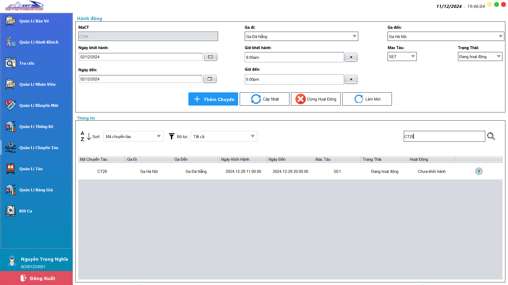

CHỨC NĂNG CỦA NHÂN VIÊN LỊCH TRÌNH
I. Thêm chuyến tàu
Bước 1: Nhập đầy đủ thông tin như tên chuyến tàu, ga đi, ga đến,
ngày khởi hành, ngày đến, loại tàu, trạng thái của chuyến tàu vào các ô
Bước 2: Sau đó nhấn "Thêm Chuyến" để tiến hành thêm chuyến
tàu
Bước 3: Nhận được thông báo thêm chuyến tàu thành công.
I. Cập nhật chuyến tàu
Bước 1:Chọn quản lí chuyến tàu ở thanh menu bên phải
Bước 2: Chọn chuyến tàu cần cập nhật ở bảng bên dưới.
Bước 3: Chỉnh sửa các thông tin cần chỉnh sửa ở các ô.
Bước 4: Nhận thông báo cập nhật chuyến tàu thành công.
II. Dừng hoạt động chuyến tàu
Bước 1:Chọn quản lí chuyến tàu ở thanh menu bên phải
Bước 2: Chọn chuyến tàu cần dừng hoạt động ở bảng bên dưới.
Bước 3: Nhận được cập nhật chuyến tàu thành công..
IV. Tìm kiếm chuyến tàu
Bước 1: Chọn quản lý chuyến tàu ở menu bên phải.
Bước 2: Nhập mã chuyến tàu vào ô tìm kiếm ở gốc phải trên bảng.
Bước 3: Nhấn enter hoặc nhân vào icon tìm kiếm để tìm

V. Sắp xếp chuyến tàu
Bước 1: Chọn quản lý chuyến tàu ở menu bên phải.
Bước 2: Chọn tiêu chí sắp xếp ở thanh trên bảng chứa chuyên tàu
kết quả sự tự động sắp xếp sau khi chọn tiêu chí sắp xếp xong.
VI. Lọc chuyến tàu
Bước 1: Chọn quản lý chuyến tàu ở menu bên phải.
Bước 2: Chọn tiêu chí lọc ở thanh lọc trên bảng chứa chuyên tàu
và nhân enter sau đó kết quả tự động trả về khi chọn tiêu chí lọc xong.
VII. Xem chi tiết chuyến tàu
Bước 1: Chọn quản lý chuyến tàu ở menu bên phải.
Bước 2: Ở bảng chứa danh sách cách chuyến tàu nhấn vào biểu tường
hình con mắt để xem ci tiết chuyến tàu.

VIII. Thêm tàu và toa tàu
Bước 1: Chọn quản lý tàu ở menu bên phải.
Bước 2: Nhập đầy đủ các thông tin như tên tàu, loại tàu, tình
trạng, số lượng
Bước 3: Sau khi chọn số lượng toa cần thêm thì ở bảng "Thông tin
toa" sẽ hiện số lượng toa tàu muốn thêm

Bước 4: Lựa chọn loại ghế và nhập số lượng ghế của mỗi toa
Bước 5: Nhấn thêm tàu và hệ thống sẽ hiện thị thêm tàu thành công.
IX. Cập nhật tàu và toa tàu
Bước 1: Chọn quản lý tàu ở menu bên phải.
Bước 2: Chọn tàu cần cập nhật ở bảng bên dưới
Bước 3: Sau đó nhập thông tin tàu muốn chỉnh sửa vào các ô và tùy
chỉnh thông tin ở bảng thông tin toa nằm ở giữa.
Bước 4: Nhấn cập nhập và nhận thông báo cập nhật thành công
X. Dừng hoạt động tàu và toa tàu
Bước 1: Chọn quản lý tàu ở menu bên phải.
Bước 2: Chọn tàu cần dừng hoạt động ở bảng
Bước 3: Nhấn dừng hoạt động và nhận thông báo ở màn hình
XI. Cập nhật giá cho chuyến tàu
Bước 1: Chọn quản lý bảng giá ở menu bên phải.
Bước 2: Chọn chuyến tàu cần cập nhật giá
Bước 3: Chọn toa tàu cần cập nhật giá, có thể giữ crtl để
cập nhật giá của nhiều toa cùng lúc.